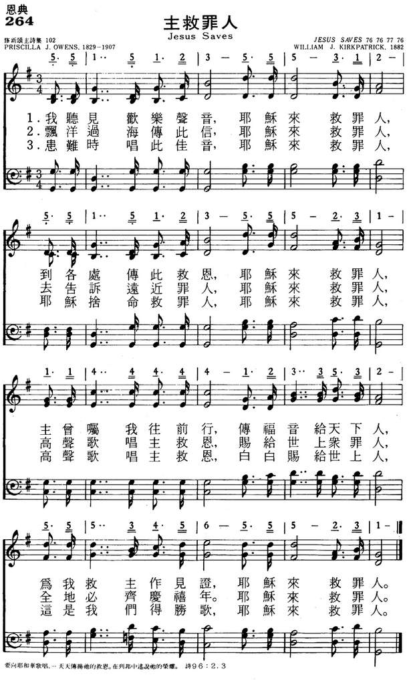

|
|
|
|
|
我已流蕩遠離天父, 現在要回家 |
|
https://www.zanmeishige.com/tab/25652.html?songbook=1&index=284
|
|
|
|
|


【詩歌欣賞】主 我要回家-溫梅桂 https://www.youtube.com/watch?v=dcAtQD-LOAM
|
|
|
|
|
我已流蕩遠離天父, 現在要回家 |
|
https://www.zanmeishige.com/tab/25652.html?songbook=1&index=284
|
|
|
|
|

【詩歌欣賞】主 我要回家-溫梅桂 https://www.youtube.com/watch?v=dcAtQD-LOAM
| Text: | 主，我要回家 (Lord, I'm coming home) |
| Author: | William J. Kirkpatrick |
| Tune: | [I've wandered far away from God] |
| Composer: | William J. Kirkpatrick |

| Title: | [I've wandered far away from God] (Kirkpatrick) |
| Composer: | William J. Kirkpatrick (1892) |
| Meter: | 8.5.8.5 with refrain |
| Incipit: | 53311 61651 13325 |
| Key: | A♭ Major |
| Copyright: | Public Domain |
William J. Kirkpatrick, 1838-1921
我且要住在耶和华的殿中，直到永远。（ 诗 23:6 ）
家，家，家。世上有那一个人永不思家？不但远离家庭的人思家，那些留在家庭里面的人，也日日思念远在异乡的家人。世人离弃了天父，也像浪子离家一样。我们怎可以不时常思念自己的属灵家庭？
我们看见花残，就知道春尽。看见叶落，就感觉秋深。看见暑往寒来，青丝变为白发，便想到人生的短速。一个人住在这个世界上数十年间，到底从那里来，到底往那里去？能给我们圆满解答的，只有耶稣基督。因为惟独耶稣基督知道人生来去的道路。（
约 14:1-2 ）教会是我们属灵的家。天堂是我们将来永远的归宿。天父为我们安排的何等美好！让我们时常想念天家永生的福乐。
这首「主，我要回家」是路加福音十五章浪子的故事以诗歌表现的怀念圣诗。词曲皆由 William J. Kirkpatrick 著作。
作者是十九世纪对福音诗歌的促进具有很大的影响者。一生都住在宾州的费城，在当地许多的卫理公会中，担任音乐指挥。亦曾经营家俱生意。
William Kirkpatrick
创作和编着许多诗歌集，超过一百种，售出达美金百万元。现在仍流行的诗歌，例如：「领我到触髅地」、「信靠耶稣真是甜美」、「主，我愿像祢」、「祂藏我灵」等。
1 我已流荡远离天父，现在要回家；
走过悠长罪恶道路，主，我要回家。
2 多年浪费宝贵岁月，现在要回家；
今天懊悔流泪悲切，主，我要回家。
3 流荡犯罪我已疲乏，现在要回家；
投靠祢爱相信祢话，主，我要回家。
（副歌）
回家吧，回家吧，不要再流荡，
慈爱天父伸开双手，主，我要回家。
＊最卑微的人若听从了跟随基督的呼召，他所拥有的荣耀便远超过任何君王或权贵。 ── 陶恕[/dropdown_box]
https://www.xueshengshi.com/?p=2289
William James Kirkpatrick (27 February 1838 – 20 September 1921) was an American hymnwriter of Irish birth.
Kirkpatrick was born in the Parish of Errigal, Keerogue, County Tyrone, Ireland to a schoolteacher and musician, Thomas Kirkpatrick and his wife, Elizabeth Storey. The family immigrated to Philadelphia on 5 August 1840, living first in Duncannon, Pennsylvania. William did not accompany his parents on the initial immigration as he was too young and they wished to be settled before bringing him to America. They did, however, give birth to a daughter on the ship in transit. William was exposed to and given formal training in music at a very young age. In 1854, he moved to Philadelphia to study music and carpentry. It was here that he studied vocal music under Professor T. Bishop. Kirkpatrick was a versatile musician playing the cello, fife, flute, organ, and violin. He joined the Harmonia and the Haydn Sacred Music Societies where he was exposed to many great composers. In 1855, he became involved in the Wharton Street Methodist Episcopal Church serving the choir with his musical talent and teaching Sunday school.
Beginning in 1858, Kirkpatrick began working with A.S. Jenks who helped him publish his first collection of hymns, Devotional Melodies, in 1859. His involvement with the Harmonia Society introduced him to another man, Dr. Leopold Meignen, under whose tutelage he devoted himself primarily to the study of music focusing on theory and composition.
In 1861, William Kirkpatrick married his first wife. Not long after the marriage, he enlisted in the 91st Regiment of the Pennsylvania Volunteers as a Fife-Major. This lasted until October 1862, when under general orders, the position was terminated. He returned to Philadelphia and supported his wife by working in carpentry. Over the next 11 years, Kirkpatrick was elected lead organist for the Ebenezer Methodist Episcopal Church, studied the pipe organ, continued in vocal lessons, and began publishing more and more hymns. It was also during this time that he was introduced to John R. Sweney. They soon became partners in their musical careers. The death of Kirkpatrick’s wife in 1878 acted as a catalyst in his life to give up the trade and devote himself fully to music and composition.
Between 1880 and 1897, Sweeney and Kirkpatrick published 49 major books. It was also during this time that Kirkpatrick was given command over all of the music at Grace Methodist Episcopal church. He married again in 1893 and became a world traveler with his wife. Over the years he published close to 100 major works and many annual works such as anthems for Easter, Christmas, and children’s choirs.
William J. Kirkpatrick died on 20 September 1921. He told his wife that night that he had a tune running through his head and he wanted to write it down before he lost it. His wife retired to bed and awoke in the middle of the night to find that he was not there. She went to his study to find him, and when she did, he was slumped over on his desk, dead. His interment was located in West Laurel Hill Cemetery near Philadelphia.
Kirkpatrick participated in many of the Camp meetings the Methodist churches held. He often led the music portion of the meeting and enlisted the help of soloists and other musicians to perform for the attenders. During one of these meetings, he became saddened by his observation of the soloist, who would perform the required songs and then leave without staying to hear the preacher. William feared that this young man did not really know Christ and so he began to pray that God would somehow get a hold of the soloist's heart. One evening while he was praying, a song began to form in his mind. He quickly jotted down the lyrics and asked the soloist to sing the song that night. The lyrics of the song convicted the young man's heart and he ended up staying and listening to the message. When the preacher gave the altar call at the end of the night, the soloist got up and went to the front of the tent and accepted Jesus into his heart.[1] The lyrics that so touched this young man, and many people since, are: "I've wandered far away from God, Now I'm coming home; The paths of sin too long I've trod, Lord, I'm coming home. Coming home, coming home, Nevermore to roam; Open now Thine arms of love, Lord, I'm coming home."[1] The song, Lord, I'm Coming Home, was based on the story of the Prodigal Son found in Luke 15.[2]
Among the many hymns that he contributed to, these are some of the most notable[3]
https://en.wikipedia.org/wiki/William_J._Kirkpatrick
Words: William James Kirkpatrick (b. Feb. 27, 1838; d. Sept. 20, 1921)
Music: William James Kirkpatrick
Links:
Wordwise Hymns
The Cyber Hymnal
Note: This 1892 gospel song is unusual for a couple of reasons. For one thing, William Kirkpatrick was a composer. He published many collections of songs, and wrote the tunes for dozens of them, but he rarely wrote the lyrics, as he did here. Second, this song was originally written for the benefit of one man. The story is found on the Wordwise Hymns link.
Sometimes the music of our gospel songs is denigrated as simplistic, repetitious, and therefore inferior. But, as noted elsewhere in this blog, the use of repeated phrases and simple melodies was often calculated. There were no photo copiers and there was no power point projection in those days. Songs were often learned by rote. Their simplicity was a factor in allowing them to be taught in a few minutes, sending people home from meetings with the message of the gospel on their lips.
Though they often produced uncomplicated tunes, it should not be concluded that all those who produced the music lacked the ability to do more if they chose to. Many of the men and women who created the music in our hymn books were gifted and highly trained musicians. William Kirkpatrick (“Kirk” or “Kirkie” to his friends) is a case in point.
Young William grew up in a musical family, his father being a music teacher. Early on the boy learned to play the fife and flute, the violin, and later the cello. At the age of sixteen, he left home for Philadelphia, where he studied music. He also learned the carpenter’s trade, and earned a living for a time selling furniture. But his passion was music. He studied voice under a leading oratorio singer, and became a member of both the Handel and Haydn Music Societies.
The musician also showed a special gift in arranging music. One afternoon after Sunday School, when he was twenty, he sat and listened as someone sang a new song to A. S. Jenks, the Bible teacher, who also published music. While the song was being sung, Kirkpatrick quickly wrote out the melody and provided a suitable harmonization. His flawless musicality impressed Jenks, and he hired the young man to harmonize camp-meeting songs that were popular at the time.
William Kirkpatrick continued to study music theory, composition and harmonization, and also studied the pipe organ. By 1878 he was devoting his entire time to writing and teaching music–organ, piano and singing. He wrote music for a number of Fanny Crosby’s songs including: Meet Me There, Tell Me the Story of Jesus, Redeemed, How I Love to Proclaim It, and He Hideth My Soul. He also collaborated with another fine nineteenth century composer of gospel music, John Sweney (1837-1899) in the publication of books of music, both for congregation and choral use.
As to the present song, it became a much-used hymn of invitation in gospel meetings, inviting the sinner to come to the Saviour. There are echoes of the parable of the prodigal son in it, as the wanderer comes home to God.
CH-1) I’ve wandered far away from God,
Now I’m coming home;
The paths of sin too long I’ve trod,
Lord, I’m coming home.
Coming home, coming home,
Nevermore to roam,
Open wide Thine arms of love,
Lord, I’m coming home.
William Kirkpatrick wrote six stanzas for this song, but books I’ve seen usually print only the first four. As you may know, many older hymns had more stanzas that are often used today. There are times, however, when I question the editorial choice that has been made. This is one of them.
Though there’s nothing wrong with the first four, it’s the last two stanzas that deal specifically with the saving work of Christ. Of the Holy Spirit’s present ministry, the Lord Jesus said, “When He has come, He will convict the world of sin…because they do not believe in Me” (Jn. 16:8-9).
“Nor is there salvation in any other, for there is no other name under heaven given among men by which we must be saved” (Acts 4:12). “In Him we have redemption through His blood, the forgiveness of sins, according to the riches of His grace” (Eph. 1:7).
CH-5) My only hope, my only plea,
Now I’m coming home;
That Jesus died, and died for me.
Lord, I’m coming home.
CH-6) I need His cleansing blood, I know,
Now I’m coming home;
O wash me whiter than the snow,
Lord, I’m coming home.
Questions:
1) What, in your view, are the best songs of gospel invitation that we have?
2) What are the benefits and dangers of calling the unsaved forward (or asking for hands to be raised) in a meeting to indicate a desire to trust Christ as Saviour?
Links:
Wordwise Hymns
The Cyber Hymnal
https://wordwisehymns.com/2012/09/10/lord-im-coming-home/
COMING HOME https://hymnary.org/result/15359545/1373624/text/ive_wandered_far_away_from_god
作有下列曲调：
https://hymnary.org/tune/we_have_heard_the_joyful_sou_kirkpatrick
